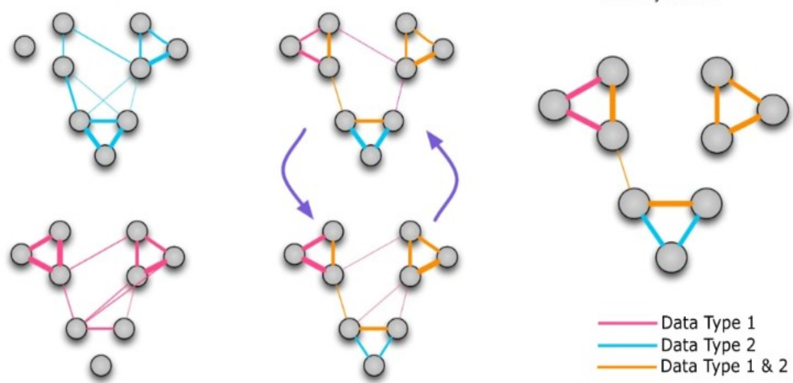

Section 2: Network Analysis#
Part 1: Over-representation and Enrichment Analysis#
Over Representation Analysis (ORA)#
Over-representation analysis (ORA) is a method used to identify which predefined gene sets are disproportionately represented in a given set of genes compared to what would be expected by random chance (Huang et al., 2009). We recommend using Over-representation analysis (ORA) only when Gene Set Enrichment Analysis (GSEA) is not suitable. Although we are using the gseapy library for ORA in this the tutorial, it’s important to note that ORA and GSEA are distinct methods.
ORA on gene expression network clusters#
Clustering on Gene Correlation Network#
We use community detection algorithm to identify communities in the network:
The greedy_modularity_communities function in NetworkX implements a community detection algorithm that optimises modularity using a greedy approach. It iteratively merges pairs of nodes or communities that result in the largest increase in modularity until no further improvement is possible. Modularity measures the density of links inside communities compared to links between communities, aiming to maximise this value to identify densely connected groups within the network.
Perform ORA on Each Community#
Performing ORA on individual clusters can help in understanding distinct biological significance of each cluster, revealing how certain pathways or functions are associated with specific subsets of genes and potentially uncovering biological themes that may be missed.
Gene Set Enrichment Analysis (GSEA)#
Gene Set Enrichment Analysis (GSEA) is a genome-wide expression analysis method designed to interpret expression profiles focusing on pre-defined gene sets. These gene sets are curated based on prior biological knowledge, such as published information about biochemical pathways or patterns of coexpression observed in previous experiment studies. The genes can be ordered in a ranked list, according to their differential expression between the classes. The primary objective of GSEA is to assess whether the genes within a given gene set tend to occur toward the top (or bottom) of the ranked list. This ranking is based on the correlation between gene expression and a particular phenotypic class distinction. By evaluating the distribution of gene set members within the ranked list, GSEA identifies whether the set is correlated with the phenotypic class, thus providing insights into underlying biological mechanisms. This method contrasts with traditional single-gene analysis by focusing on the collective behavior of gene sets, thereby uncovering biologically significant patterns that might be overlooked when examining individual genes in isolation. We use gseapy to perform GSEA on KEGG_2021_Human assigned classes based on a phenotypic attribute (e.g., smoking status). (ref)
Visualising GSEA Results#
Once you have performed GSEA, the next step is to visualise the results. Visualisation helps in interpreting the biological significance of the enriched gene sets. Here, we visualise GSEA results with Barcode Enrichment Plot, Heatmap, Clustermap, and Dot Plot.
Barcode Enrichment Plot#
Barcode Enrichment Plot shows the positions of members of a given gene set in a ranked list of enrichment scores for the top enriched terms. The scores are ranked left to right from smallest to largest. The ranked scores are represented by a shaded bar, forming a pattern like a barcode.
Heatmap Visualisation#
gseapy provides a heatmap function to visualise the expression levels of the leading-edge genes. The heatmap provides a visual representation of how these genes are expressed across different samples in relation to their assigned phenotypic classes.
Clustermap Visualisation#
The function clustermap from seaborn is used to create a clustered heatmap. It not only shows the expression levels of the leading-edge genes but also clusters them based on similarity, providing additional insights into gene expression patterns. The cluster map includes dendrograms, which show the hierarchical clustering of both genes and samples, helping to identify groups of co-expressed genes and similar samples.
Dot Plot Visualisation#
Use the dotplot function in gseapy to create a visual representation of the GSEA results. Here we use “FDR q-val” to determine the dot sizes, which represents the false discovery rate adjusted p-values. We display normalised enrichment score (NES) value as the x-axis.
GSEA on Clusters#
Similarly to ORA, GSEA can also be performed on individual communities after clustering. This allows for a more granular analysis, revealing pathways and functions that are enriched within particular subgroups of the data.
Part 2: Similarity Network Fusion#
In Part 1, we worked with a gene expression network, where each node represents a gene. In Part 2, our focus shifts to Patient Networks. In patient networks, each node represents an individual patient. Unlike gene networks that represent molecular interactions, patient networks encode similarities and differences between patients, based on various modalities of data such as gene expression profiles and DNA methylation patterns.
{kind=link}
Clustering on Individual Patient Networks#
We can apply clustering methods to patient networks to identify patterns in relation to a phenotypic attribute (e.g., smoking status)
Similarity Network Fusion (SNF)#
In Patient Network analysis, we often want to combine patient data based on multiple modalities. Similarity network fusion (SNF) uses networks of patients as a basis for integration between multiple modalities. SNF consists of two main steps:
Construction of a sample-similarity network for each data type
Integration of these networks into a single similarity network using a nonlinear combination method.
We use the Python library snfpy for similarity network fusion (SNF). We perform K-nearest neighbors procedure on each adjacency matrices to create and fuse similarity networks.